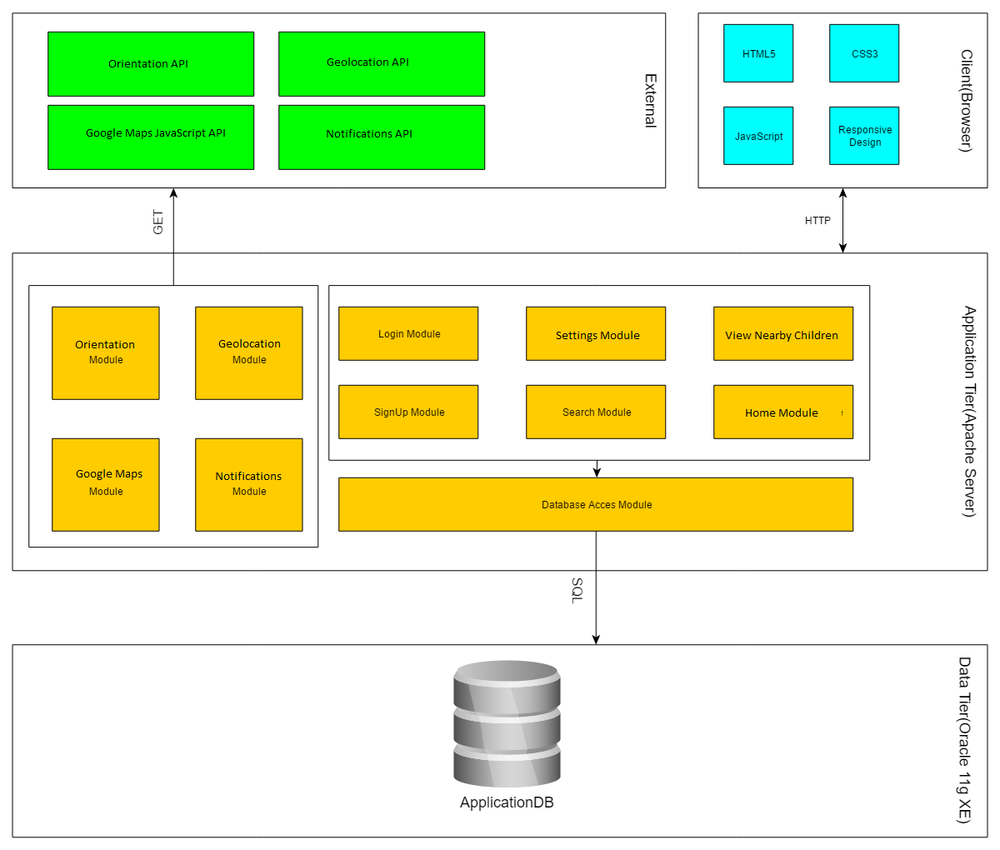

Kido
Kido permite monitorizarea copiilor ȋn timp real și notificarea utilizatorului la evenimente de interes, bazat pe setările sale, precum avertizarea in caz de comportament neobisnuit al acceleromerului. Informațiile ce stau la baza aplicației se obțin prin senzori de geolocalizare. Kido asigură părinții că micutii lor nu au părăsit siguranța casei, permițându-le acestora sa se relaxeze din aceasta privinta.
Sistemul Web permite monitorizarea unuia sau mai multor copii, bazat pe distanța acestuia sau acestora față de unul sau mai multe puncte specificate de utilizator sau coordonatele unor persoane specificate. Distanța este specificată de utilizator. Utilizatorul va trebui să seteze senzorii pentru copii și persoanelor detectabile de aplicație.
Tehnologii folosite
În implementarea aplicației a fost create special un api pentru transmiterea informatiilor senzorilor telefonului dar si un api ce emuleaza aceste date. Am folosit api-urile pentru notificări și hărți oferite de Google. Acestea se vor folosi ȋmpreună cu JavaScript, ca limbaj de progamare,, Node.js, platforma Express și ca zona de date am folosit un fisier json.
JavaScript
JavaScript (JS) este un limbaj de programare orientat obiect bazat pe conceptul prototipurilor. Este folosit mai ales pentru introducerea unor funcționalități în paginile web, codul Javascript din aceste pagini fiind rulat de către browser. Cea mai des întâlnită utilizare a JavaScript este în scriptarea paginilor web. Programatorii web pot îngloba în paginile HTML script-uri pentru diverse activități cum ar fi verificarea datelor introduse de utilizatori sau crearea de meniuri și alte efecte animate. Vom folosi JavaScript pentru ferestre de tip popup,slideshows si pentru a accesa serviciile oferite de platformele pe care le integram. Aceste platforme ne pun la dispozitie diverse API-uri (Application Programming Interface) , pe care le vom folosi pentru a integra continutul deja existent pe platformele mentionate,in aplicatia noastra.
Geolocation API
API-ul Geolocation definește o interfață de nivel ȋnalt pentru informații despre locație asociate cu dispozitivul unde se află implementarea, precum latitudinea și longitudinea. API n cunoaște de unde vin aceste informații. Surse comune includ Sistemul de localizare globală (GPS) și locația dedusă din semnale de rețea precum adresa IP, RFID, WiFi și adresele MAC prin Bluetooth, și ID-urile GSM/CDMA ale telefonului, precum și input-ul utilizatorului. API-ul nu garantează că returnează adevărata locație a dispozitivului.
În aplicație se va utiliza pentru preluarea datelor de la senzorii de localizare și emularea acestora.
Screen Orientation API
API-ul Screen Orientation oferă abilitatea de a citi tipul de orientare a ecranului și unghiul, detectarea schimbării orientării ecranului și abilitatea să blocheze orientarea ecranului.
API-ul va fi utilizat pentru emularea accelerometrului pentru detectarea coliziunilor și preluarea datelor de la senzori.
Google Maps JavaScript API
Google Maps este un serviciu de mapare pe web dezvolotat de Google. Oferă imagine din satelite, hărți stradale, vizualizări panoramice ȋn 360°(Street View), condiții de trafic ȋn timp real (Google Traffic), și găsirea unei rute pentru traversa pe jos, cu mașina, cu bicicleta sau transport public. API-ul oferă posibilitatea de folosi acest serviciu prin JavaScript.
În aplicație Google Maps va fi folosit pentru vizualizarea locației copiilor.
Notifications API
API-ul Notifications permite paginilor web să controleze afișarea notificațiilor de sistem utilizatorului, se pot afișa chiar dacă utilizatorului a schimbat tab-ul sau utilizează altă aplicație. API-ul este proiectat să fie compatibil cu sistemele de notificare existente pe mai multe platforme.
API-ul va fi utilizat pentru transmiterea notificărilor.
Arhitectura
Aplicația va fi una single-page, adică, toate functionalitatile serviciului vor fi oferinte intr-o singura pagina. În continuare vom descrie elementele aplicației:
-
Harta
Harta va reprezenta obiectul principal al paginii. Aceaasta va fi responsive si isi va modifica marimea in functie de marimea dispozitivului, adica poate fi folosita usor si pe aplicatiile mobile. Utilizatorul are posibilitatea de a apasa pe un loc aleator pe harta si a pune un punct de interes care va face referire la pozitia copilului. Aceste puncte sunt setate astfel incat uitlizatorul sa poata fi anuntat atunci cand copii lor se departeaza fata de un obiect specificat precum un apartament sau o persoana. In momentul apasarii un marker va fi afisat pe harta iar in partea dreapta va aparea o noua casuta cu denumirea punctului de referinta (acesta se va alege automat si va fi denumit folosind literele alfabetului latin) precum si distanta acestui punct fata de pozitia copilului. De asemenea va aparea si un buton ce va permite renuntarea la punctul de referinta specificat anterior.
Harta va folosi markere diferite pentru punctele de interes si copii. De asemenea se va permite stergerea tututor marker-elor, ascunderea acestora si reafisarea lor.

-
Cadrul de gestionare a setarilor
Această sectiune cuprinde urmatoarele fielduri :
-
 Introducere copil:
Introducere copil:
un un field input de tip text ce va permite introducerea id (channel-ului primit in momentul inregistratii la serviciile oferite). Id-ul va fi introdus in acest field si trimis catre server prin apasarea butonului. Daca id-ul este valid un nou marker va aparea pe harta iar aceasta se va centraliza pe el.
-
Hide markers:
acest buton va ascunde toate marker-ele setate
-
Show all markers:
acest buton va reafisa marker-ele ascunde
-
Delete markers:
acest buton va sterge toate marker-ele setate
-
 Aceasta se va popula cu cate o casuta pentru fiecare puct de interes setat. Casuta va afisa numele marker-ului, distanta acestuia fata de copil si un buton ce va permite stergerea marker-ului. De asemenea butonul remove va sterge si casuta respectiva. In caz ca micutul se departeaza fata de punctele de interes peste distanta maxima admisa aceasta casuta se va inrosi si o notificare folosind api-ul de notificare de la Google va fi afisata.
Aceasta se va popula cu cate o casuta pentru fiecare puct de interes setat. Casuta va afisa numele marker-ului, distanta acestuia fata de copil si un buton ce va permite stergerea marker-ului. De asemenea butonul remove va sterge si casuta respectiva. In caz ca micutul se departeaza fata de punctele de interes peste distanta maxima admisa aceasta casuta se va inrosi si o notificare folosind api-ul de notificare de la Google va fi afisata.
-
Doua field-uri(una pentru coordonata x iar celalalt pentru coordonata y):
aceste field-uri permit introducerea manuala a pozitiilor unui punct de interes. Acesta va fi setat apasant pe butonul "Add point of interest"
-
Setarea distantei maxime:
acesta va contine un field sentru setarea distantei maxime permise a unui punct de interes fata de copil. Depasirea acestei distante va invoca afisarea de notificari (avertizari)
-
Documentation:
un buton ce va permite afisarea documentatie aplicatiei
-
View nearby:
un buton ce va permite afisarea copiilor ce au setat in fisa utilizatorului ca aceestia sa fie vizibili celorlalti utiilizatori
-
Api Documentation:
un buton ce va permite afisarea documentatie api-ului oferit de aceasta aplicatie
-
Distanta catre cel mai apropiat punct:
un field ce va afisa distanta catre cel mai apropiat punct de interes fata de copil
-
Distanta catre cea mai apropiata persoana:
un field ce va afisa distanta catre cea mai apropiata persoana inregistrata in sistem fata de copil

Design-ul este responsive, putant fi utilizat si pe telefon.
-
Detalii de implementare
Modelarea datelor
Pentru stocarea datelor se va utiliza o structura din javascript, anume JSON, în felul următor:
- Se creaza o clasa principala ce va fi va contine un array de clase secundare, utilizatorii sistemului
- Clasele secundare au cate o denumire fiecare (este folosita la indentificarea unica a utilizatorului):
-
Clasele secundare au ca field-uri urmatoarele:
- name: care reprezeinta numele utilziatorului
- Latitude: care reprezeinta longitudinea locatiei utilziatorului
- longitude: care reprezeinta latitudinea locatiei utilziatorului
- visible: care specifica daca utilizatorul va fi vizibil celorlalti utilizatori
- Acest JSON va putea fi modificat prin intermediul unui api construit pentru aplicatie
Use case-uri
La intrarea în site se vor accesa cookie-uri şi dacă se obţine date pentru email şi parolă care corespund celor din baza de date se logează utilizatorul şi se redirecţionează spre Homepage altfel spre pagina de Login.
La signup se verifică dacă existe câmpuri necompletate şi dacă parolele se potrivesc, dacă există câmpuri necompletate sau parolele nu se potrivesc se afişează un mesaj sau mesaje de eroare, altfel datele sunt verificate să nu fie introdusă deja în baza de date adresa de email, dacă este deja în baza de date se afişează un mesaj de eroare altfel se generează un id pentru utilizator şi se introduc datele acestuia în baza de date.
La cererea copiilor din jur verifică baza de date pentru copii din jur şi îi adaugă pe hartă pe cei ce sunt îndeajuns de aproape apoi afişează harta.
Verificarea poziţiei copilului/copiilor se face prin accesarea Homeage-ului, unde se preiau datele despre setările senzorului se folosesc funcţiile din Geolocalizare şi Google Maps pentru a afişa o hartă cu poziţia copilului/copiilor şi poziţiile punctelor şi persoanele specificate de utilizator.
Adăugarea unui nou punct se face prin completarea formularului de pe panoul din dreapta.
Distribuire Sarcini
-
Iacob Andrei
- Baza de date
- Find kids
- Settings
- Geolocationation
- CSS
-
Moisii Cosmin
- Signup
- Login
- Set senzor
- Notifications
- Screen Orientation
- Google Maps
Planificare
-
Saptamana 10
- familiarizarea cu framework-ul JavaScript
- scheletul principal al aplicatiei
- primele module: login si signup
-
Saptamana 11
- simulare senzori
-
Saptamana 12
- interactiunea cu API-urile
- gestiunea fisierelor de pe server
-
Saptamana 13
- implementarea bazei de date
-
Saptamana 14
- foi de stiluri
- responsiveness
- testare